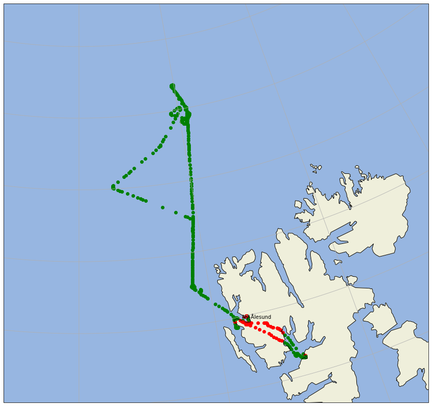

land-ocean mask¶
In this example we show how a land ocean mask can be applied to the flight path. The decission is made based on cartopy.io.shapereader.natural_earth(resolution='10m', category='physical', name='land'). All functionality is packed into a routine is_land(), which is part of the ac3airborne toolbox.
import ac3airborne.tools.is_land as il
import ac3airborne
from simplification.cutil import simplify_coords_idx
/usr/local/lib/python3.8/dist-packages/cartopy/io/__init__.py:260: DownloadWarning: Downloading: https://naciscdn.org/naturalearth/10m/physical/ne_10m_land.zip
warnings.warn('Downloading: {}'.format(url), DownloadWarning)
---------------------------------------------------------------------------
gaierror Traceback (most recent call last)
/usr/lib/python3.8/urllib/request.py in do_open(self, http_class, req, **http_conn_args)
1353 try:
-> 1354 h.request(req.get_method(), req.selector, req.data, headers,
1355 encode_chunked=req.has_header('Transfer-encoding'))
/usr/lib/python3.8/http/client.py in request(self, method, url, body, headers, encode_chunked)
1251 """Send a complete request to the server."""
-> 1252 self._send_request(method, url, body, headers, encode_chunked)
1253
/usr/lib/python3.8/http/client.py in _send_request(self, method, url, body, headers, encode_chunked)
1297 body = _encode(body, 'body')
-> 1298 self.endheaders(body, encode_chunked=encode_chunked)
1299
/usr/lib/python3.8/http/client.py in endheaders(self, message_body, encode_chunked)
1246 raise CannotSendHeader()
-> 1247 self._send_output(message_body, encode_chunked=encode_chunked)
1248
/usr/lib/python3.8/http/client.py in _send_output(self, message_body, encode_chunked)
1006 del self._buffer[:]
-> 1007 self.send(msg)
1008
/usr/lib/python3.8/http/client.py in send(self, data)
946 if self.auto_open:
--> 947 self.connect()
948 else:
/usr/lib/python3.8/http/client.py in connect(self)
1413
-> 1414 super().connect()
1415
/usr/lib/python3.8/http/client.py in connect(self)
917 """Connect to the host and port specified in __init__."""
--> 918 self.sock = self._create_connection(
919 (self.host,self.port), self.timeout, self.source_address)
/usr/lib/python3.8/socket.py in create_connection(address, timeout, source_address)
786 err = None
--> 787 for res in getaddrinfo(host, port, 0, SOCK_STREAM):
788 af, socktype, proto, canonname, sa = res
/usr/lib/python3.8/socket.py in getaddrinfo(host, port, family, type, proto, flags)
917 addrlist = []
--> 918 for res in _socket.getaddrinfo(host, port, family, type, proto, flags):
919 af, socktype, proto, canonname, sa = res
gaierror: [Errno -3] Temporary failure in name resolution
During handling of the above exception, another exception occurred:
URLError Traceback (most recent call last)
<ipython-input-1-c7048833505c> in <module>
----> 1 import ac3airborne.tools.is_land as il
2 import ac3airborne
3 from simplification.cutil import simplify_coords_idx
~/.local/lib/python3.8/site-packages/ac3airborne/tools/is_land.py in <module>
4 from shapely.prepared import prep
5
----> 6 land_shp_fname = shpr.natural_earth(resolution='10m', category='physical', name='land')
7 land_geom = unary_union(list(shpr.Reader(land_shp_fname).geometries()))
8 land = prep(land_geom)
/usr/local/lib/python3.8/dist-packages/cartopy/io/shapereader.py in natural_earth(resolution, category, name)
293 format_dict = {'config': config, 'category': category,
294 'name': name, 'resolution': resolution}
--> 295 return ne_downloader.path(format_dict)
296
297
/usr/local/lib/python3.8/dist-packages/cartopy/io/__init__.py in path(self, format_dict)
220 else:
221 # we need to download the file
--> 222 result_path = self.acquire_resource(target_path, format_dict)
223
224 return result_path
/usr/local/lib/python3.8/dist-packages/cartopy/io/shapereader.py in acquire_resource(self, target_path, format_dict)
348 url = self.url(format_dict)
349
--> 350 shapefile_online = self._urlopen(url)
351
352 zfh = ZipFile(six.BytesIO(shapefile_online.read()), 'r')
/usr/local/lib/python3.8/dist-packages/cartopy/io/__init__.py in _urlopen(self, url)
259 """
260 warnings.warn('Downloading: {}'.format(url), DownloadWarning)
--> 261 return urlopen(url)
262
263 @staticmethod
/usr/lib/python3.8/urllib/request.py in urlopen(url, data, timeout, cafile, capath, cadefault, context)
220 else:
221 opener = _opener
--> 222 return opener.open(url, data, timeout)
223
224 def install_opener(opener):
/usr/lib/python3.8/urllib/request.py in open(self, fullurl, data, timeout)
523
524 sys.audit('urllib.Request', req.full_url, req.data, req.headers, req.get_method())
--> 525 response = self._open(req, data)
526
527 # post-process response
/usr/lib/python3.8/urllib/request.py in _open(self, req, data)
540
541 protocol = req.type
--> 542 result = self._call_chain(self.handle_open, protocol, protocol +
543 '_open', req)
544 if result:
/usr/lib/python3.8/urllib/request.py in _call_chain(self, chain, kind, meth_name, *args)
500 for handler in handlers:
501 func = getattr(handler, meth_name)
--> 502 result = func(*args)
503 if result is not None:
504 return result
/usr/lib/python3.8/urllib/request.py in https_open(self, req)
1395
1396 def https_open(self, req):
-> 1397 return self.do_open(http.client.HTTPSConnection, req,
1398 context=self._context, check_hostname=self._check_hostname)
1399
/usr/lib/python3.8/urllib/request.py in do_open(self, http_class, req, **http_conn_args)
1355 encode_chunked=req.has_header('Transfer-encoding'))
1356 except OSError as err: # timeout error
-> 1357 raise URLError(err)
1358 r = h.getresponse()
1359 except:
URLError: <urlopen error [Errno -3] Temporary failure in name resolution>
For example check if Cologne, Germany is on land:
lat = 50.938056
lon = 6.956944
il.is_land(lon, lat)
True
Now plot the flight with different colors over land or over ocean:
import matplotlib.pyplot as plt
import cartopy.crs as ccrs
import cartopy.feature as cfeature
#import xarray as xr
import numpy as np
#campaign = 'ACLOUD'
#aircraft = 'P5'
#number = 'RF14'
#date = '20170608'
#flight = campaign + '_' + aircraft + '_' + number
# read gps data
#file = '~/ac3airborne/campaigns/'+campaign.lower()+'/'+aircraft.lower()+'/gps_ins/'+campaign+'_polar'+aircraft[1]+'_'+date+'_'+number+'.nc'
#ds_gps = xr.open_dataset(file)
def simplify_dataset(ds, tolerance):
indices_to_take = simplify_coords_idx(np.stack([ds.lat.values, ds.lon.values], axis=1), tolerance)
return ds.isel(time=indices_to_take)
cat = ac3airborne.get_intake_catalog()
ds_gps = cat['Polar5']['GPS_INS']['ACLOUD_P5_RF14'].to_dask()
ds_gps = ds_gps.isel(time=slice(1,-1))
dsreduced = simplify_dataset(ds_gps, 1e-3)
# prepare for plotting
proj = ccrs.NorthPolarStereo()
extent = (-5.0, 24.0, 78.0, 83.0)
fig = plt.figure(figsize=(15, 15))
ax = plt.axes(projection=proj)
ax.set_extent(extent)
ax.add_feature(cfeature.OCEAN)
ax.add_feature(cfeature.LAND)
ax.gridlines()
ax.coastlines()
nya_lat = 78.924444
nya_lon = 11.928611
ax.plot(nya_lon, nya_lat, 'ro', transform=ccrs.PlateCarree())
ax.text(nya_lon, nya_lat+0.05, 'Ny-Ålesund', transform=ccrs.PlateCarree())
#for x, y in zip(ds_gps.lon, ds_gps.lat):
for x, y in zip(dsreduced.lon, dsreduced.lat):
if il.is_land(x, y):
ax.scatter(x, y, transform=ccrs.PlateCarree(), c='red')
else:
ax.scatter(x, y, transform=ccrs.PlateCarree(), c='green')
